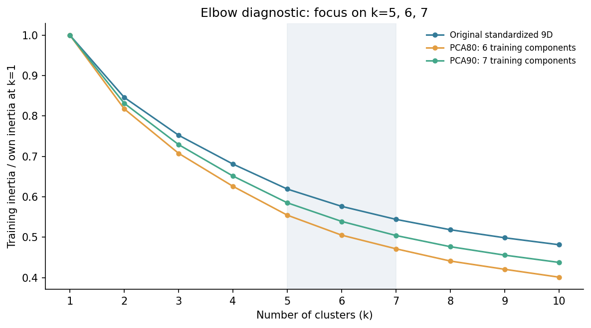
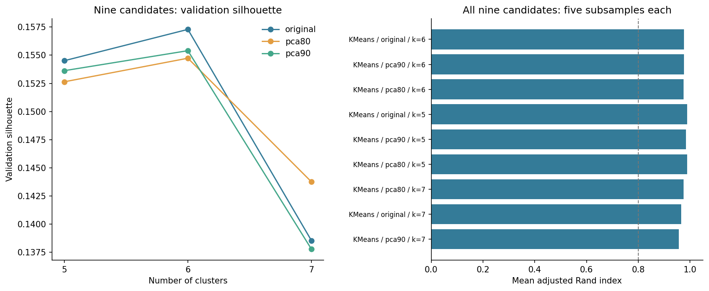
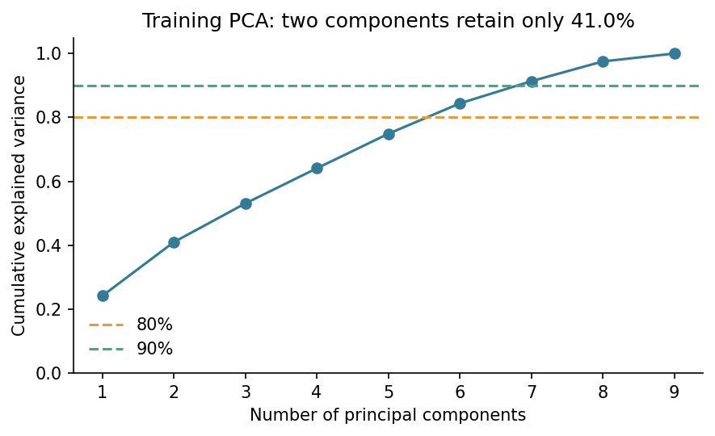
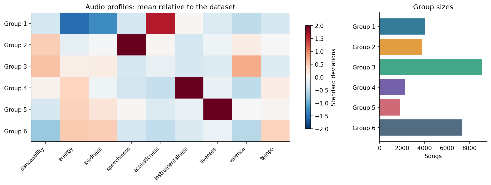
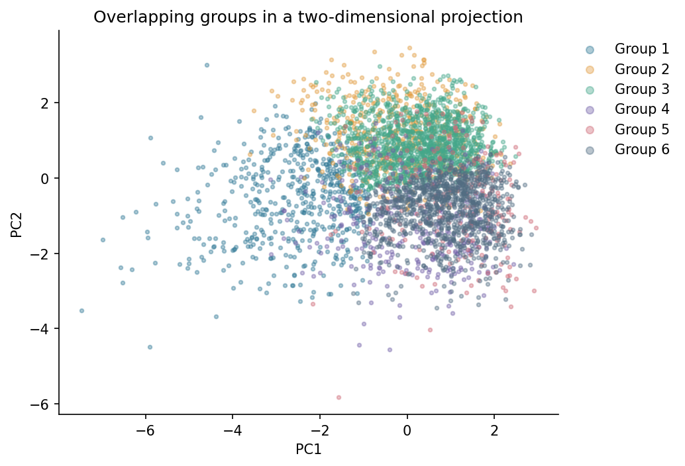

Selected: Original standardized 9D, k=6. PCA80 uses six components; PCA90 uses seven.
README | Analysis report | Full comparison CSV
| representation | k | dimensions | silhouette | db | ch | stability_ARI_mean | selected |
|---|---|---|---|---|---|---|---|
| original | 6 | 9 | 0.1573 | 1.6002 | 355.5371 | 0.9763 | True |
| pca90 | 6 | 7 | 0.1554 | 1.6059 | 354.2024 | 0.9757 | False |
| pca80 | 6 | 6 | 0.1547 | 1.6035 | 353.9067 | 0.9750 | False |
| original | 5 | 9 | 0.1545 | 1.7089 | 374.5491 | 0.9888 | False |
| pca90 | 5 | 7 | 0.1536 | 1.7102 | 373.9743 | 0.9840 | False |
| pca80 | 5 | 6 | 0.1526 | 1.7083 | 373.7201 | 0.9885 | False |
| pca80 | 7 | 6 | 0.1438 | 1.5778 | 333.9974 | 0.9750 | False |
| original | 7 | 9 | 0.1385 | 1.6519 | 334.4469 | 0.9659 | False |
| pca90 | 7 | 7 | 0.1378 | 1.6538 | 333.1563 | 0.9571 | False |




